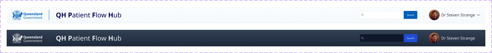

Clinical calm
Minimal decoration, restrained shadows and clear section rules. The interface should support scanning, not visual drama.

01 · Foundation
Use a flat, compact, blue-led clinical style. White surfaces hold data. Blue communicates active state and structure. Status colours communicate operational meaning only.
Minimal decoration, restrained shadows and clear section rules. The interface should support scanning, not visual drama.
Header and primary menu remain sticky so readers can scroll or anchor-jump through sections.
Ignore small AI colour drift. Use this system for all generated views unless a new clinical state is explicitly required.
Use these approved PNG lockups for light and dark contexts.
02 · Foundation
Core palette confirmed from the light and dark Hub header/menu CSS and prototype screenshots.
03 · Foundation
Use Noto Sans throughout. Do not use Public Sans in this prototype.
| Use | Size / Weight | Notes |
|---|---|---|
| Site title | 20px / 700 | QH Patient Flow Hub title in primary header |
| Menu text | 11px / 400 | Primary menu base |
| Selected menu text | 11px / 600 | Active tabs and selected states |
| Header search button | 10px / 400 | Matches compact QH header export |
| Table headers | 10–11px / 700 | Blue uppercase header labels |
05 · Components
Buttons and filters inherit the compact Hub UI: 24–30px controls, soft 2–4px radius, fine borders and blue active states.
06 · Clinical State
07 · Universal
Card tiles preserve the same status colours used in table mode.
| Ward / Unit | Hospital | Capacity | Occupancy | Status |
|---|---|---|---|---|
| PICU | Rockhampton | 30 | 127% | Critical |
| General Medicine | QEII | 28 | 89% | High Pressure |
{kind=link}